I have presented the PDF titled “Alien Interview” to the readership. It is supposed to be the transcripts of the interview that a nurse had with an extraterrestrial entity that was recovered from a spaceship crash in Roswell, New Mexico. There is a lot of good stuff there, and a lot of things that run counter to what I know and understand to be true. My intention here is to parse the entire book, and compare it to what I know. Where the two diverge, it will be up to you (the readership) to sort it out.
This is part 4.
Key point – Document appears to be genuine
And I can tell you all that the more that I parse this document, the clearer it is (to me) that it is genuine.It is exactly what it says it is. And the extraterrestrial is actually telling the truth, so far.
Key point – Errors
However, there are some errors in translation, and confusion in the interpretation of what is being stated. Anything concerning “time” and the translation of dates seems to have some errors. The translator was having difficulty with those areas.
Humans think of time as “shared” and “linear”.
The type-1 greys think of time as circular and repeating. As in, consciousness enters and exits different world lines” and if you graph that movement of consciousness you will see a “corkscrew” movement through the MWI. Which is what it was referring to. All of which was WAY beyond the concepts of anyone in Roswell at that time.
Therefore all dates and time, and anything associated with these characteristics might in error. If you are having trouble in these areas, treat them as non-resolved issues and can be ignored.
Key point – This document predates MAJestic
Also take note that this document pre-dates MAJestic, and it is crystal clear to me now, that my role was, and still is, in the rehabilitation aspects of moving the Earth from a Hellish “Prison Planet” to that of a “sentience nursery”.
This document has (for me, personally) helped to clarify elements and aspects of my role that were “blurred” and obscured from me. To that I am eternally grateful.
Look at the dates on my articles, and look at what I covered. You will see that they match up nearly perfectly with this “Alien Interview” transcript. And this is the first time that I have ever heard of this document. The timing was transcendental.
This is part four of the parsing of this document
You can view part 1 HERE.
SUBJECT: ALIEN INTERVIEW, 27. 7. 1947, 1st Session
“The actual history of Earth is very bizarre. It is so nonsensical that is it is incredible to anyone on Earth who attempts to investigate it. A myriad of vital information is missing from it. A huge conglomeration of non sequitur relics and mythology has been arbitrarily introduced into it. The volatile nature of the Earth itself cyclically covers, drowns, mixes and shreds physical evidence.
I have no problem with this.
These factors, combined with amnesia and post-hypnotic suggestions, false facades and covert manipulation make a reconstruction of the factual origins and history of Earth civilizations virtually indecipherable.
I have no problem with this.
Any investigator, no matter how brilliant, is doomed to wallow in a quagmire of inconclusive assumptions, unworkable hypotheses, and perpetual mystery.
I have no problem with this.
Since The Domain does not suffer these afflictions, having the advantage of memory, longevity and an exterior point of view, I will add some clarification to your fragmentary knowledge of the history of Earth.
Stand by for clarification of our fragmentary knowledge.
These are some of the dates and events that are not mentioned in Earth history textbooks.
These are significant dates. All of which are not mentioned in any of the history books that were provided to the extraterrestrial.
These dates are significant because they provide some information concerning the influences of the “Old Empire” and of The Domain on Earth.
They are significant as they introduce the role of both the "Old Empire" and the "Domain" regarding Earth.
Although I have attended several briefings by our mission control personnel on the general background of Earth within the past few hundred years, I will rely principally on data gathered from records captured after our invasion of the “Old Empire” planetary headquarters. Since that time The Domain Expeditionary Force has tracked the general progress of events on Earth.
"The Domain" was unaware of Earth and what was going on. This all changed when "The Domain" conquered "The Old Empire". When "The Domain" took over the main capital, they acquired substantive documents regarding Earth. Most of what the extraterrestrial is relaying is in regards to what the records of the "Old Empire" has recorded.
As I mentioned, in some cases The Domain has chosen to intervene in certain affairs on Earth in order to ensure the success of our long term expansion plans.
I have no problem with this statement.
Although The Domain has no interest in Earth, per se, or in the population of IS-BEs on this planet, it does serve our interests to ensure that the resources of Earth are not destroyed or spoiled.
Important points; "The Domain" has [1] no interest in the Earth or the population of IS-BE on the planet. [2] However, they do not want to see the Earth destroyed as a result of uncontrolled activity of it's population. They want to see a "green" planet that takes care of it's environment, and does not destroy the world in a global wide nuclear holocaust. For those of you who are wondering where some of these media narratives come from, perhaps you all should be looking at a grand strategy to turn the Earth into a Sentience Nursery.
To that end, certain officers of The Domain have been sent to Earth on reconnaissance missions from time to time to gather information.
I have no problem with this.
However, Moreover, the following dates and events have been extrapolated from the accumulated information in the data files of The Domain – at least those that are accessible to me through the space station communications center.
208,000 BCE — Old Empire Established
The establishment of the “Old Empire”, whose headquarters were located near one of the “tail stars” in the Ursa Major (Big Dipper) Constellation of this galaxy. The “Old Empire” invasion force conquered the area with nuclear weapons sometime earlier.
From the point of view of humans on the earth, this statement is loaded with information. [1] We know that the Earth was seeded way, way a long time ago by the progenitors. [2] We also know that intelligent sentient beings, native to earth, grew and developed and either died out or changed. [3] We know that (according to this extraterrestrial) that there were large colonies of humanoid extraterrestrials that established the colonies of Lemuria, and Atlantis, around 400,000 years ago. [4] We know that proto-humans started to develop at that time, with the earliest monkey-like creatures two million years earlier. And tool-making humanoids around 200,000 years ago. This statement then says that after the extraterrestrial colonies of Atlantis and Lemuria were long gone, and proto-humans were starting to use tools, the "Old Empire" came to power. Their base of power, or primary settlement, is at a cluster of stars that we identify as the "tail stars" in the Ursa Major (Big Dipper) Constellation. It does not mean that the huge enormous O, B, and A stars were the ones that harbored the civilization seat. But rather that this was the geographic region for the planets, where ever their existed or orbited. They were brutal in conquering the previous civilizations and nuclear weapons and other very dangerous weapons of destruction were utilized, and we can well imagine that they completely devastated the civilizations that they encountered in severe "space opera" style.
After the radioactivity subsided and the clean-up and restoration were completed, it received the immigration of beings from another galaxy into this galaxy. Those beings set up a society that kept going until about 10,000 years ago when it was superseded by The Domain.
Again, this is just full of information. We don't know what the "Old Empire" was. But what we do know is that right after they had conquered the major civilizations in this section of our galaxy, they started to import or migrate other species from another galaxy to here. This "other group of immigrants" were either of the same type, species, or sentience of the "Old Empire" and thus were able to occupy the conquered worlds of that empire. This continued for 10,000 years. Then the "Domain" entered the region, and took over, and conquered them. We know from (part 3) that they did not use nuclear weapons, but rather highly powerful disruptive beans that affected the IS-BE consciousnesses directly.
Very recently Earth civilization has come to resemble aspects of that civilization, now that it has fallen out of its immediate control.
I personally find this statement alluring. This was 1947. This was right before the 1950's and the 1960's in America. What he is referring to is the creation of central-power governments that controlled all else. Hitler and the Nazi Germans out of Berlin. Mao and China out of Beijing. Stalin and Russia out of Moscow. The United States out of Washington DC A central European "block". From this we can extrapolate that the central power model with very little control locally represents the fundamental structural elements of the "Old Empire".
In particular, the appearance and technology of transportation such as planes, trains, ships, fire engines, and automobiles, as well as what you consider to be “modern” or “futuristic” architecture, which emulate the design of buildings in the major cities of the “Old Empire”.
Again, very interesting. It is saying that all the "modern" advancements of technology resemble those which defined the "Old Empire".
Before 75,000 BCE — Colonies on Earth
The Domain records contain very little information about the civilizations on the continental land masses of Atlanta and Lemur, except to note that they did coexist on Earth at more or less the same time.
The records of the "Domain" were just cursory reviews of the solar system as a whole. And between 400,000 and 75,000 years ago, both Atlantis and Lemuria colonies existed at that time.
Apparently, both civilizations were founded by remnants of electronic, space opera cultures who fled from their native planetary systems to escape political or religious persecution.
So we can well imagine a solid science-fiction narrative where an escaping group of settlers leave a harsh "space opera" galactic empire. Where they fled to an out-of-the-way planet, in a generally not well traveled part of the galaxy.
The Domain knows that a long-standing edict of the “Old Empire” prohibits unauthorized colonization of planets.
At this time of the founding of the "Old Empire" was the same time as the colonies of Atlantis and Lemuria came into being. Since the "Old Empire" did not authorize these colonies, they must have been illegal. We can imagine that when the "Old Empire" came into being, that some of the people or creatures that they conquered, fled the ruins and devastation and came to earth to start a new life. And apparently, for many years they had good, prosperous societies upon the earth. But eventually we know that both were destroyed suddenly and with a complete violence that left very little remaining.
Therefore, it is possible that their destruction was caused by police or military forces who pursued the colonists as criminals and destroyed them.
The extraterrestrial hypothesise that the destruction of the "renegade" colonies was conducted by the "Old Empire".
Although this seems a likely supposition, no conclusive evidence exists that explains the complete destruction and disappearance of two entire electronic civilizations.
It's just a hypothesis. There isn't any proof for it. What is interesting is that both civilizations of Atlantis and Lemuria were both "entire electronic civilizations" which would be well understood to be similar to what exists around the world today.
Another possibility is that a massive submarine volcanic eruption in the region of Lake Toba, in Sumatra and Mt. Krakatoa in Java caused the destruction of Lemur.
The flood waters caused by the eruption overwhelmed all the land masses, including the highest mountains.
Survivors of the destruction of the civilization, the Lemurians, are the earliest ancestors of the Chinese.
This is very interesting. The Chinese race then are descended from the survivors of the Lemuria colony, which were survivors of a previous civilization that was conquered by the "Old Empire", and who thus fled to Earth.
Australia and the ocean areas to the north were the center of the Lemurian civilization and are the source of Oriental races. Both civilizations possessed electronics, flight and similar technologies of space opera cultures.
Both of the colonies of Atlantis, and Lemuria were fully modern and electronic civilizations possessing great technology. Now, aside from the idea that the "Old Empire" eradicated and destroyed the colonies of those that fled when the "Old Empire" took over, the extraterrestrial posits that there might be another explanation. The loss of the colonies could be the result of natural geologic forces...
Apparently, the volcanic eruption expelled such a significant mass of molten rock that the resulting vacuum beneath the crust of Earth caused great areas of the land masses to sink below the oceans.
The continental areas occupied by both civilizations were covered with volcanic matter, and then submerged, leaving very little evidence that they ever existed except for legends of a global flood which prevail in every culture of the Earth, and for survivors who are the genus of oriental races and cultures.
That kind of colossal volcanic explosion fills the stratosphere with toxic gases which are carried around the whole planet. The usual refuse of these volcanic eruptions can easily cause a rain that lasts for “40 days and 40 nights” due to atmospheric pollution as well as an extensive period during which radiation from the sun is deflected back into space, and cause global cooling.
Certainly such an event would cause an ice age, extinctions of life forms and many other relatively long-term changes lasting thousands of years.
The extraterrestrial states that aside from [1] the systematic destruction of the two colonies by the "Old Empire", the only remaining potential cause for the destruction is [2] a natural event, and in this case, it offers the idea of a global wide volcanic eruption of significant magnitude and duration.
Due to the myriad types of naturally occurring global cataclysmic events which are indigenous to Earth, it is not a suitable planet for habitation by IS-BEs.
The Earth is not a suitable environment for IS-BE's. This is because of natural events. And that these natural events can cause global cataclysmic calamities.
In addition there have been occasional global cataclysms caused by IS-BEs such as the one that destroyed the dinosaurs more than 70 million years ago.
This extraterrestrial states that the Cretaceous–Paleogene Extinction was not a natural event, but rather an intentional event made by IS-BE's. About 66 million years ago, 75% of species became extinct during the Cretaceous–Paleogene Extinction. Rates of extinction broadly swept the land, sea, and air. In the oceans, ammonites disappeared. All non-avian dinosaurs became extinct. But avian dinosaurs survived because it was birds that descended from theropod dinosaurs. Eventually, mammals emerged as dominant large land animals. It is believed that the cause of this extinction event was from an asteroid impact which left an impact called the Chicxulub Crater. Also, giant floor basalts aggravated called Deccan Traps.
That destruction was caused by intergalactic warfare during which time Earth, and many other neighboring moons and planets, were bombarded by atomic weapons.
This is also an interesting statement. So in the extraterrestrials' narrative, which is talking about the "Old Empire" from 400,000 BCE to 10,000 BCE. Now, the narrative suddenly jumps to a point in time, long before the period of discussion. At this point in time, 66 - 70 million years ago, long before the "Old Empire", and "The Domain", there was a terrible war in our solar system. It is not mentioned who were involved in this war, or why.
Atomic explosions cause atmospheric fallout much like that of volcanic eruptions. Most of the planets in this sector of the galaxy have been uninhabitable deserts since then.
Another interesting point. This war of 66 - 70 million years ago was not limited to our solar system, but rather involved multiple star systems. It also was devastating. Many otherwise habitable planets were turned into wasteland and barren deserts as a result of it.
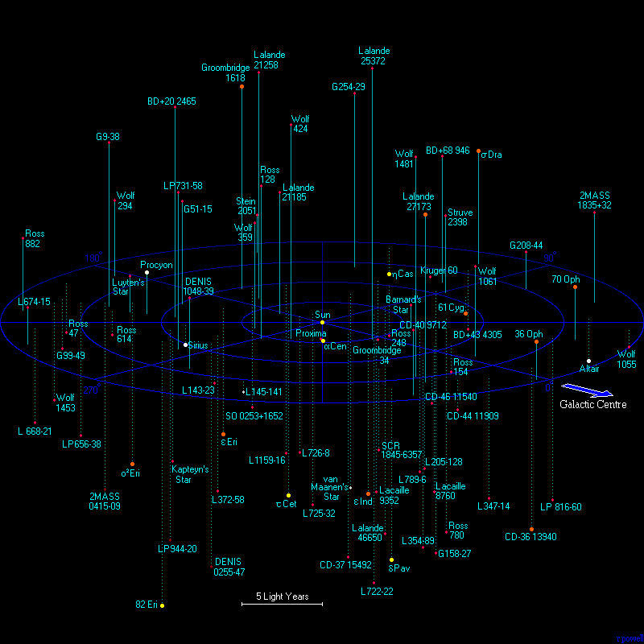
Earth is undesirable for many other reasons: heavy gravity and dense atmosphere, floods, earthquakes, volcanoes, polar shifts, continental drift, meteor impacts, atmospheric and climatic changes, to name a few.
An interesting point, and something that I have stated elsewhere. [1] heavy gravity [2] dense atmosphere, [3] floods, [4] earthquakes, [5] volcanoes, [6] polar shifts, [7] continental drift, [8] meteor impacts, [9] atmospheric and climatic changes, The changes that greatly affect the Earth for many thousands of years after the event are shown in bold.
What kind of lasting civilization could any sophisticated culture propose to develop in such an environment?
Good point. I have no problem with this.
In addition, Earth is a small planet of a “rim star” of a galaxy.
Not really true; geographically. The solar system is smack dab in one of the major "arms" of the galaxy geographically. You can see this on a map.
However, if you look at the statement from the point of view of the population centers of the galaxy in our region, then you can find some answers. The extraterrestrial stated that an enormous war took place in our section of the galaxy 70 million years ago and it resulted in many neighboring solar system to lose what ever habitable worlds that existed. Imagine that in all that devastation, nothing much remains, and the Earth solar system is one of the few "oasis" in a sea of death, destruction and wasteland.
This makes Earth very isolated geographically from the more concentrated planetary civilizations which exist toward the center of the galaxy.
These obvious facts have made Earth suitable for use only as a zoological or botanical garden, or for it’s current use as a prison – but not much else.
Which is also something that I have stated in my previous articles.
Before 30,000 BCE — Misfits started arriving to the Earth
I can tell you that I have long known about the presence of "federation" craft in and around our Earth at 30,000 years ago. Its just that I assumed that they were type-1 grey vehicles. This disclosure clarifies my information. It states that the visitations to the earth at 30,000 BCE were "Old Empire" vehicles performing specific activities in and around the Earth.
Earth started being used a dumping ground and prison for IS-BEs who were judged “untouchable”, meaning criminal or non-conformists.
IS-BEs were captured, encapsulated in electronic traps and transported to Earth from various parts of the “Old Empire”.
Underground “amnesia stations” were set up on Mars…
…and on Earth in the Rwenzori Mountains in Africa…
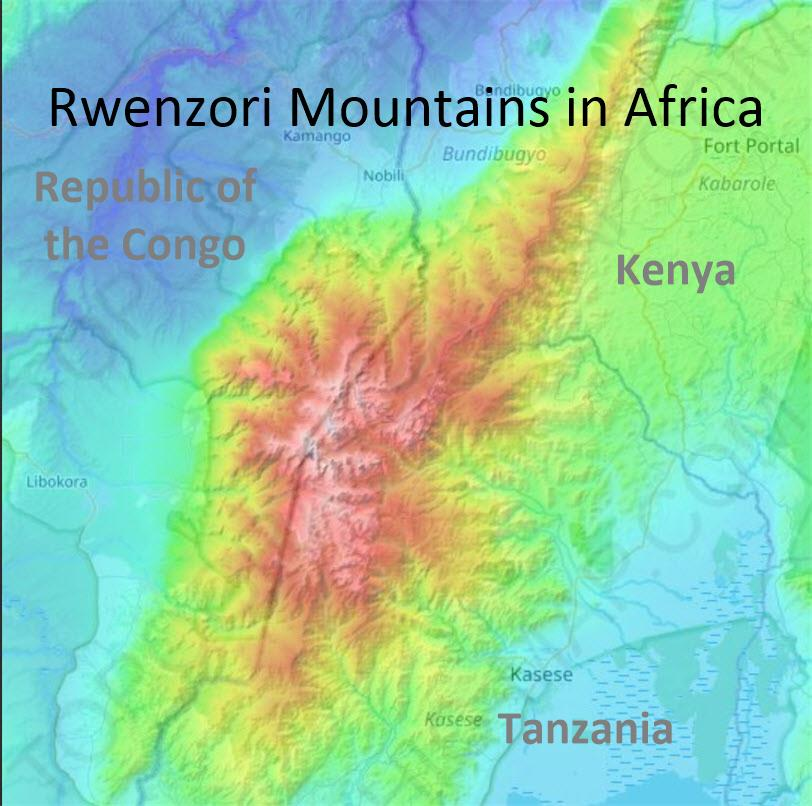
… in the Pyrenees Mountains of Portugal…
… and in steppes of Mongolia.
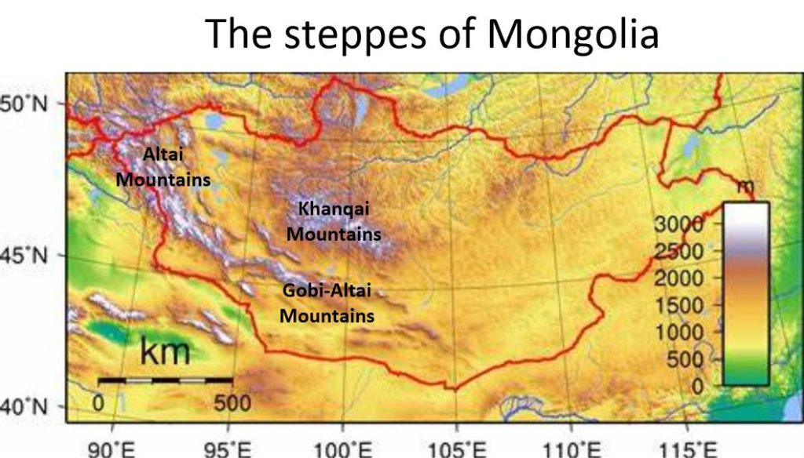
These electronic monitoring points create force screens designed to detect and capture IS-BEs, when the IS-BE departs the body at death.
The way these devices work is it [1] senses when a person dies, and the consciousness departs the body at death. Then, [2] it attracts, snares or captures that consciousness.
IS-BEs are brainwashed using extreme electronic force in order to maintain Earth’s population in state of perpetual amnesia.
A high enough, or powerful enough, electronic force can do anything. This then provides amnesia for the consciousness. However, there is evidence that it no longer is wholly functional. You see, according to the extraterrestrial, the devices (the electronic amnesia screens) only work when the person departs the body as consciousness, they lose all memories and then are reshuffled back to the Earth. Yet, we know, that through various techniques (such as hypnosis) we can recover these memories of time before lives, and within other lives. I have copied complete books of Robert Newton in this regard. You can see my articles here; Thus the works by the great Doctor Michael Newton who studied the geography of Heaven through regression hypnosis. It might be something that most people would discount as "tin foil hat" nonsense, but his works absolutely and accurately describe what I have observed personally in my MAJestic dealings. Though, please take note that he did not understand the MWI, and some of his assumptions are in error. What he did was try to map out what Heaven was from the basis of what "time" and "reality" is. Still the best reads out there.
The first book is considered “ground breaking”, I however thought that it was rather elementary. Thus, I strongly urge any reader to read this book first before you tackle the second…
The Geography of Heaven; Journey of Souls (full text) by Michael Newton
Unfortunately, this first book has all kinds of “new age” things inside of it that pretty much “turned off” my readership. It also had some misconceptions. So I went ahead and annotated the book and explained things so that my base readership would understand what is going on, relative to MAJestic and the entire universe. Here are the posts broken down for easy reading and study…
The second book is full of “red meat” and is just packed with information. However, most readers will not be able to understand it unless they read the first book. This book, due to the size and complexity has been broken down into three posts. A lot of good stuff is here. Again, realize that he and his patents did not understand what “time”, “realities” and the concept of “quantum shadows”. Please take his misconceptions into account when you read his works.
So in summary, my point is that [1] things have certainly changed since 1947. And that [2] during the 1970's all sorts of discoveries were starting to be made regarding regaining memories of past lives, and the interim period between lives. Combined, this offers [3] the suggestion that efforts of MAJestic and the Domain extraterrestrials have been successful in greatly reducing the influences of these force screens. Yet, some questions remain. [4] Being able to recall past lives, that occurred before 10,000 years ago suggests that the shield amnesia effect is not permanent. [5] However, most human subjects that I have read in the Dr. Newton studies suggest that their memories are more recent than that. Which suggests that it was only after the shield was turned off that they were able to remember memories that happened after 10,000 years. But, I can tell you that MM has partial memory retention, and that MM memories date back to around 250,000 years. What does this mean? [6] I have a EBP that (perhaps) assists in memory retention. [7] If the memory can be recalled under hypnosis earlier than 1150AD (the destruction of a major "old Empire" base), it means that your memory amnesia is not permanent. [8] If your memory can be recalled under hypnosis earlier than 8,000 BCE, it means that you are probably not part of the 3,000 domain expeditionary forces that had complete memory wipes. For they had a complete and permanent wipe that was (at 1947) unrecoverable. Obviously there are many unanswered questions. Could it be lying, or could things have changed substantially since 1947 and with MAJestic support and assistance starting one year later in 1948? I personally believe that things have changed, and I also believe that the world-line clustering, slides to anchor world-lines were very effective in the support of bringing about a recovery of memories. But that is just me.
Further population controls are installed through the use of long range electronic thought control mechanisms.
So it is not just one or two facilities or bases that run these devices, but an entire constellation of them, with many located far away geographically.
These stations are still in operation and they are extremely difficult to attack or destroy, even for The Domain, which will not maintain a significant military force in this area until a later date.
That later date may have already happened. Most certainly things have changed substantially since 1947.
The pyramid civilizations were intentionally created as part of the IS-BE prison system on Earth.
Interesting. The Egyptian pyramids are part of the prison structure? Tell me more.
The pyramid is alleged to be the symbol for “wisdom”. However, the “wisdom” of the “Old Empire” on planet Earth is intended to operate as part of the elaborate amnesia “trap” consisting of MASS, MEANING and MYSTERY.
These are opposite to the qualities of an Immortal Spiritual Being which have no mass, or meaning. An IS-BE “is” solely because it thinks that it “is”.
A consciousness consists of: [1] Thoughts. Not physical mass. [2] Formlessness. Not tangible meaning. [3] Clarity. Not mystery.
MASS: represents the physical universe, including objects such as stars, planets, gases, liquids, energy particles and tea cups. The Pyramids were very, very solid objects, as were all of the structures created by the “Old Empire”. Heavy, massive, dense, solid objects create the illusion of eternity.
Dead bodies wrapped in linen, soaked in resin, placed inside engraved golden coffins and entombed with Earthly possessions amid cryptic symbols create an illusion of eternal life.
However, dense, heavy physical universe symbols are the exact opposite of an IS-BE. An IS-BE has no mass or time. Objects do not endure forever. An IS-BE “is” forever.
I have absolutely no problem with these statements.
MEANING: False meanings prevent knowledge of the truth. The pyramid cultures of Earth are a fabricated illusion. They are nothing more than “false civilizations” contrived by the “Old Empire” mystery cult called the Brothers of the Serpent.
False meanings were invented to create the illusion of a false society to further reinforce the amnesia mechanism among the intimates in the Earth prison system.
I have absolutely no problem with these statements.
MYSTERY: is built of lies and half-truths. Lies cause persistence because they alter facts which are comprised of exact dates, places and events. When truth is known, a lie no longer persists. If the exact truth is revealed, it is no longer a mystery.
I have absolutely no problem with these statements.
All of the pyramid civilizations of Earth were carefully contrived of layer upon layer of lies, skillfully combined with a few truths. The priest cult of the “Old Empire” combined sophisticated mathematics and space opera technology, with theatrical metaphors and symbolism. All of these are complete fabrications of truth, baited with the allure of aesthetics and mystery.
I have absolutely no problem with these statements.
The intricate rituals, astronomical alignments, secret rites, massive monuments, marvelous architecture, artistically rendered hieroglyphs and man-animal “gods” were designed to create an unsolvable mystery for the IS-BE prison population on Earth. The mystery diverts attention away from the truth that IS-BEs have been captured, given amnesia and imprisoned on a planet far, far away from their home.
I have absolutely no problem with these statements. It is the common misdirection technique deployed by black program, and the American media mechanism today.
The truth is that every single IS-BE on Earth came to Earth from some other planetary system.
This is very curious. Every single person... every single human on Earth is an immigrant or a descendant of an immigrant.
Not one person on Earth is a “native” inhabitant. Human beings did not “evolve” on Earth.
Humans did not evolve from primates. Primates evolved, and went into various "dead ends". But the humans that existed upon the earth were transplants. None of them evolved per the common belief that everyone holds. Monkeys did not eventual evolve into humans.
In the past, Egyptian society was run by the prison administrators or priests, who, in turn, manipulated a Pharaoh, controlled the treasury and kept the inmate population enslaved physically and spiritually. In modern times, the priests have changed, but the function is the same. However, now the priest are prisoners too.
This system of religion controlling the leadership is an on-going theme throughout the human cultures and societies, and it has only been most recently that this has changed.
Mystery reinforces the walls of the prison. The “Old Empire” feared that the IS-BEs on Earth might regain their memory. Therefore, one of the primary functions of The “Old Empire” priesthood is to prevent IS-BEs on Earth from remembering who they really are, how they came to Earth, where they came from.
And so they destroyed the mere idea of reincarnation...
The “Old Empire” operators of the prison system, and their superiors, do not want IS-BEs to remember who murdered them, captured them, stole all of their possessions, sent them to Earth, gave them amnesia and condemned them to eternal imprisonment!
Well, of course not!
Imagine what might happen if all of the inmates in the prison suddenly remembered that they have the right to be free! What if they suddenly realized that they have been falsely imprisoned and rise up as one against the guards?
Yikes!
They are afraid to reveal anything that looks like the civilization of the inmates home planets. A body, a piece of clothing, a symbol, a space ship, an advanced electronics device, or any other remnant of civilization from a home planet could “remind” a being and rekindle his memory.
So they did everything in their power to keep everyone primitive. When Greece started to advance, it was destroyed. When Persia started to advance, it was destroyed. When Rome started to advance it was destroyed. When the Chinese kingdoms advanced, they were destroyed. But it all came to an end, more or less around 1150 ad.
Sophisticated technologies of entrapment and enslavement, which were developed over millions of years in the “Old Empire”, have been applied to the IS-BEs on Earth with the intention to create a false facade for the prison. These facades were installed on Earth in totality, all at once. Every piece is a fully integrated part of the prison system.
This idea that everything was established all at once is highly suggestive of a pre-designed system of prison construction. This goes along with my strong belief that there are five "sentience nurseries" in this region of space. All of which occupy the formerly ruined worlds of the catastrophic space wars of 66 million years ago.
This includes a religion of mumbo-jumbo double-speak.
Every pyramid civilization uses this as part of a control mechanism to keep the population enslaved by force, by fear and by ignorance.
The indecipherable muddle of irrelevant information, geometric designs, mathematical calculation, astronomical alignments, are part of a false spirituality based on solid objects, rather than immortal spirits, in order to confuse and disorient the IS-BEs on Earth.
I have no problem with these statements.
When the body of a person died they were buried with their Earthly possessions, including their former body wrapped in linen, to sustain their “soul” or “Ka” after death. An IS-BE does not “have” as soul. An IS-BE is a soul.
I agree.
On the home planet of an IS-BE their material possessions were not lost, stolen or forgotten when the being died or left the body. An IS-BE could return and claim the possessions.
Nothing is ever lost in our universe it only changes shape.
However, if the IS-BE has amnesia, they will not remember that they had any possessions. So, governments, insurance companies, bankers, family members and other vultures can pick their possessions clean without fear of retribution from the deceased.
This is something that the Roswell leadership could well understand. And something that I too understand most perfectly.
The only reason for these false meanings is to instill the idea that an IS-BE is NOT a spirit, but a physical object!
This is a lie.
It is a trap for an IS-BE.
And, isn't that exactly what is taught in schools and religions?
Countless people have spent endless hours attempting to solve the jig-saw puzzle of Egypt and other “Old Empire” civilizations. They are puzzles made of pieces that do not fit. A question states its own answer.
Everything is an intentional "dead end".
What is the mystery of Egypt and other pyramid cultures? Mystery!
circa 15,000 BCE – Bolivia mining operations
The “Old Empire” forces supervised the construction of a hydraulic mining operations in the Andes Mountains in present day Bolivia near Lake Titicaca (Lake of Tin Stones) at Tiahuanaco including construction of the massive stone complex of carved stone buildings known as Kalasasaya and its “Gate of the Sun” at an elevation of nearly 14,000 feet.
No problem with this.
11,600 BCE – Polar Axis Shift
The Polar Axis of Earth shifted to a sea area. The last Ice Age came to an end abruptly as the polar ice caps melted and the level of the ocean rose to submerge large sections of the land masses of Earth. The last remaining vestiges of Atlantis and Lemuria were covered by water. Massive extinctions of animals occurred in the Americas, Australia and the Arctic Regions due to the shift of the poles.
Worlds in Collision, Velikovsky, Immanuel.
10,450 BCE — Plans for the Great Pryramid were created.
Plans were made by the “Old Empire” IS-BE called Thoth for construction of a Great Pyramid of Giza. The 4 “air shafts” of the pyramid point precisely to key stars in the “Old Empire” as seen from Giza in this year. The alignment of the Pyramids of Giza on the ground matches perfectly the alignment of the constellation of Orion as seen in the sky from Giza relative to the Nile as the earthly representation of the Milky Way in the sky.
No problem with this. This date is in alignment with Graham Hancock. Like the Cayce Association, he continues to argue for a 10,500 B.C. "origin" of the Great Pyramid and Giza Plateau.
10,400 BCE – Herodotus records that Atlantis records are buried under the Sphinx.
According to the Earth historian, Herodotus, records from the ruined civilization of Atlantis, containing electronic technology and other technology of that society, were buried in a vault beneath the paws of The Sphinx.
The Greek historian wrote that he was told this by some of his friends who were Priests of Anu, the Sumerian god, at the Egyptian city of Heliopolis.
However, it is highly unlikely that any traces of an electronic civilization would be allowed to be left intact on Earth by the “old empire” prison system administrators.
No problem with this.
8,212 BCE — Veda Hymns created.
The Veda or Vedic hymns are a set of religious hymns that were introduced into the societies of Earth. They came forward in spoken tradition, memorized, from generation to generation. “The Hymn to the Dawn Child” includes an idea called the “cycle of the physical universe”: the creation, growth, conservation, decay and death or destruction of energy and matter in a space. These cycles produce time. The same set of hymns describes the “theory of evolution”.
Here is a tremendous body of knowledge which contains a great deal of spiritual truth. Unfortunately, it has been incorrectly evaluated by humans and altered with lies and reversals of fact by priests which are a booby trap to prevent anyone from using the wisdom to discover a way to escape from the prison planet.
No problem with this.
8,050 BCE — Old Empire Home Planet is conquered and destroyed.
Destruction of the “Old Empire” home planet government in this galaxy.
This was the end of the “Old Empire” as a political entity in the galaxy.
However, the vast size of the “Old Empire” will take many thousands of years for The Domain to conquer completely.
The inertia of the political, economic and cultural systems of the “Old Empire” will remain in place for some time to come.
No problem with this.
However, remnants of the “Old Empire” space fleet in the solar system of Earth were finally destroyed in 1,230 AD.
Massive destruction in the solar system at 1230 AD. Meanwhile on Earth everyone was fighting everyone else. See HERE.
In addition to operatives of the “Old Empire” who run the Earth prison operation, there were other beings from the “Old Empire” who came to Earth.
Since Earth was no longer under the control of the “Old Empire” after their defeat by The Domain Forces, there was no police force to control military renegades, space pirates, miners, merchants and entrepreneurs who came to Earth to exploit the resources of the planet for personal gain, and many other nefarious reasons.
No problem with this. After the government collapsed, everyone came to take advantage of the situation, loot and acquire power.
For example, the history of Earth, according to the Jewish people, describes the “Nephilim“. Chapter 6 of The Book of Genesis, describes the origin of the “Nephilim” :
“Now it came about, when men began to multiply on the face of the land, and daughters were born to them, that the “sons of God” saw that the daughters of men were beautiful; and they took wives for themselves, whomever they chose.
The Nephilim were on the earth in those days, and also afterward, when the sons of God came in to the daughters of men, and they bore children to them. Those were the mighty men who were of old, men of renown.”
We would call these people "carpetbaggers".
The ancient Jewish people who wrote the history book called the Old Testament were slaves, herders and gatherers. Any modern technology, even a simple flashlight, would seem astounding and miraculous to them. They attributed any unexplainable phenomenon or technology to the workings of a “god”.
This is Eric Von Daniken stuff. He wrote about this three decades later in the 1970's.
Unfortunately, this behavior is universal among all IS-BEs who have been given amnesia, and cannot remember their own experiences, training, technology, personality or identity.
Obviously, if these were men, and they mated with Earth women, they were not “sons of god”.
They were humans that mated with human Earth women who had no recollections of their true nature.
They were IS-BEs who inhabited biological bodies in order to take advantage of the political situation in the “Old Empire”, or simply to indulge in physical sensation.
They set up small colonies of their own on Earth beyond the reach of the police and tax authorities.
I am sure... all over the world.
Coincidentally, one of the most serious crimes an IS-BE could commit in the “Old Empire” was to violate income tax regulations. Income taxes were used as a slavery mechanism and as a punishment in the “Old Empire”. The slightest error in a tax report made an IS-BE “untouchable”, followed by imprisonment on Earth.
It sounds so much like America today.
6,750 BCE — Other “Pyramid Civilizations” set up.
Other Pyramid civilizations were set up by the “Old Empire” on Earth.
These were established in Babylon, Egypt, China and Mesoamerica. The Mesopotamian area provided service facilities, communication stations, space ports, and stone quarry operations for these false civilizations.
Ptah was the name given to the first in a succession of administrators from the “Old Empire” who represented themselves to the Earth population as “divine” rulers.
Ptah’s importance may be understood when one learns that the word “Egypt” is a Greek corruption of the phrase “Het-Ka-Ptah,” or “House of the Spirit of Ptah”. Ptah, was nick-named “The Developer”. He was a construction engineer. His high priest was given the title ‘Great Leader of Craftsmen’.
Ptah was also the god of reincarnation in Egypt. He originated the “opening of the mouth ceremony” which was performed by priests at funerals to “release souls” from their corpses. Of course, when the “souls” were released, they were captured, given amnesia, and returned to Earth again.
The so-called “Devine” rulers who followed Ptah on Earth were called “Ntr”, meaning “Guardians or Watchers” by the Egyptians. Their symbol was the Serpent, or Dragon which represented a secret priesthood of the “Old Empire” called the “Brothers of the Serpent”.
“Old Empire” engineers used cutting tools of highly concentrated light waves to quickly carve and excavate stone blocks. They also used force fields and space craft to lift and transport blocks of stone weighing hundred or thousands of tons each. The placement on the ground of some of these structures will be found to have geodetic or astronomical significance relative to various stars in this galactic region.
The buildings are crude and impractical, compared to building standards on most planets.
As an engineer of The Domain, I can attest that make-shift structures like these would never pass inspection on a planet in The Domain. Stone blocks such as those used in the pyramid civilizations can still be seen, partially excavated, in the stone quarries in the Middle East and elsewhere.
Most of the structures were hastily built “props”, much like the false facades of a western town on the set of a motion picture. They appear to be real, and to have some use or value however, they have no value. They have no useful purpose. The pyramids and all of the other stone monuments erected by the “Old Empire” could be called “mystery monuments”.
Good points. Why create these enormous stone structures unless to support some kind of an illusion of power? The people lived in wood structures. Why make these big stone creations that apparently served no functional purpose? Most of these discussions sound very familiar as the "alternative history" of the world. People point to the alternative "historians" as the folk that started these beliefs, but aside from the Edgar Cayce narratives, everything actually began at this "Alien Interview". And it was kept secret from the general population for decades.
For what reason would anyone waste so many resources to construct so many useless buildings? To create a mysterious illusion.
The fact of the matter is that each one of the “divine rulers” were IS-BEs who served as operatives of the “Old Empire”. They were certainly not “divine”, although they were IS-BEs.
6248 BCE – Battles for the Solar System
The beginning of active warfare between The Domain Space Command and the surviving remnants of the “Old Empire” space fleet in this solar system that lasted nearly 7,500 years.
So for the firm dates, we can say that the warfare began in 6278 BCE, and ended in 1150 AD. Or roughly 7500 years.
It began when an installation was established in the Himalaya mountains by a battalion of the 3,000 officers and crew members of The Domain Expeditionary Force. The installation was not fortified as The Domain was not aware that the “Old Empire” maintained Earth as a prison planet.
So the Domain set up a undefended base. And it was destroyed and the members imprisoned.
The Domain installation was attacked and destroyed by space forces of the “Old Empire” who continued to operate in the solar system of Earth.
IS-BEs of The Domain battalion were captured, taken to Mars, given amnesia, and sent back to Earth to inhabit human biological bodies. They are still on Earth.
5,965 BCE — Dominion bases on Venus set up to fight the Old Empire forces
Investigations into the disappearance of Domain forces in this solar system led to the discovery of “Old Empire” bases on Mars and elsewhere.
The Domain took over the planet Venus as a defensive position against the space forces of the “Old Empire”.
When the warfare began, the Domain set up defensive positions on Venus.
The Domain Expeditionary Force also monitors life forms on Venus which has a very dense, hot and heavy atmosphere of sulfuric acid clouds. There are a few life forms on Earth that can endure an atmospheric environment like Venus.
This provided them protection from the "Old Empire" forces, which were, after all, all humans.
The Domain also established secret installations or space stations in the (Earth) solar system.
This solar system has a planet that is broken up – the asteroid belt. It provides a very useful low-gravity platform for take off and landing of space craft. It is used as a “galactic jump” between the Milky Way and adjoining galaxies.
This asteroid belt is in the "frost zone" and planetary formation in this area is not stable.
There aren’t any planets at this end of the galaxy that can serve as a good galactic entering spot for incoming transport, and other ships. But this broken up planet makes a very ideal space station.
As a result of our war against the “Old Empire”, this area of the solar system is now a valuable possession of The Domain.
So as a side effect of cleaning out the "rat's nest" that was the "Old Empire" was the ability to set up staging locations for on-ward progress towards the more populated sections of the galaxy.
3,450 – 3,100 BCE — The Domain interrupts Prison Planet Management
The intervention into the affairs on Earth by the “Old Empire” operatives or “divine gods” was disrupted at this time by The Domain Forces.
They were forced to replace themselves with human rulers.
The Warden(s) for the "Prison planet" of Earth now had to leave. They could no longer maintain their roles and their positions. If they did, the Domain, would secure them, and remove them. So the roles were taken over by the "inmates".
The First Dynasty of human Pharaohs who united Upper and Lower Egypt began with the rule of a Pharaoh who, coincidentally, was named “MEN”. He established the capital city called Men-Nefer, “The Beauty of Men” in Egypt.
This started the first succession of 10 human Pharaohs and a period of 350 years of chaos that followed in the administrative ranks of the “Old Empire”.
I have no problem with this statement.
3,200 BCE — Open war between the Domain and the Old Empire on Earth
As I mentioned earlier, Earth was under attack between The Domain and the “Old Empire” forces during this period.
Of course this does not make any sense to archaeologists or historians on Earth, because the Egyptian period is a space opera era period. Since Earth historians have amnesia, they assume that this was only a religious period.
Archaeologists who study ancient Egypt assume all the writings are not technical or historical. Instead they view it as religious and superstitious.
Further, because the technology and civilizations installed on Earth during this period were “prepackaged”, they did not “evolve” on Earth.
Of course, there is no evidence anywhere on Earth of an evolutionary transition which resulted in sophisticated mathematics, language, writing, religion, architecture, cultural traditions in Egypt or any of the pyramid civilizations.
These cultures, complete with all of the details of racial body types, hair-styles, facial makeup, rituals, moral codes and so forth, just “appeared” as complete integrated packages.
This is something that I too have commented about.
The physical evidence suggests that all evidence of the intervention of The Domain or “Old Empire” Forces, or any other extraterrestrial activity, has been carefully “cleaned up”, so as not to create suspicion.
I would agree with this as well.
The “Old Empire” force does not want the IS-BEs of Earth to suspect that they have been captured, transplanted to Earth and brainwashed.
I have no problem with this statement.
So, Earth historians continue to assume that Egyptian priests were not supposed to have “ray guns” or other technology of the “Old Empire”. And, they suppose that there was nothing going on, on Earth, except some priests walking around saying ‘Amen’, which the Christians still say.
3,172 BCE – Astronomical grid layout
Layout of the astronomical grid that joins the key mining sites and astronomical buildings of ‘the gods’ in the Andes Mountains such as Tiahuanaco, Cuzco, Quito, the cities of Ollantaytambu, Machu Picchu and for the mining of rare metals, including tin for use in making bronze.
Metals were the property of “the gods”, of course.
Graham Hancock discussed this in one of his books.
A great variety of entrepreneurial mining was done on Earth at that time due to the war between the “Old Empire” force and The Domain.
These miners did carve a few sculptures of themselves.
They are seen wearing mining helmets.
The Ponce stela sculpture in the sunken courtyard of the Kalasasaya temple is a crude rendering of a stone worker using an electronic, light-wave emitting stone cutter and carving tools, held in a holster.
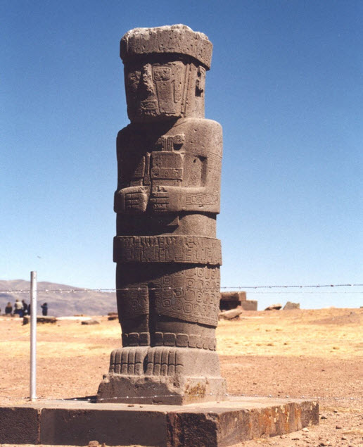
The “Old Empire” has also maintained mining operations on planets throughout the galaxy for a very long time. The mineral resources of Earth are now a property of The Domain.
2,450 BCE — Great pyramid complex finished
The “great” pyramid and complex of pyramids near Cairo were completed.
I am a little bit confused with this. Earlier he started talking or discussing the creation of pyramids in Egypt at around 10,000 BCE. Now he is saying that they were completed at 2450 BCE, which is about 7,500 years later.
An inscription created by the “Old Empire” administrators can be seen in the so-called Pyramid texts.
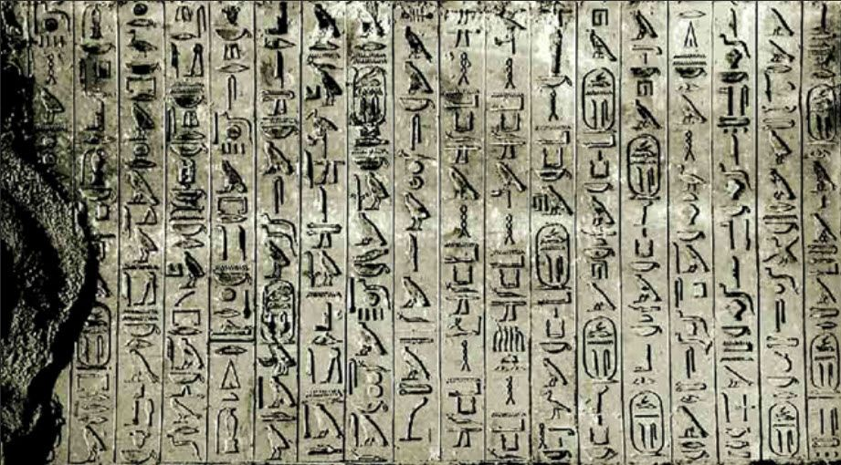
The texts say that the pyramid was built under the direction of Thoth, Son of Ptah.
Of course there was never a King buried in the chamber, since the pyramids were never intended to be used as a burial chamber.
The great pyramid was located precisely at the exact center of all of the land masses of Earth, as viewed from space.
Obviously such precise measurements require aerial perspective and a view of the land masses of Earth from space. Purely mathematical calculations of the geodetic center of the continents of Earth could not be made otherwise.
Of course. This is one of the many arguments made by alternative historians.
Shafts were constructed inside the pyramid to align with the configuration of stars in the constellation of Orion, Canus Majora, and specifically Sirius.
The shafts are also aligned to the Big Dipper, where the home planet of the “Old Empire” existed.
Also, Ainitak, Alpha Draconis and Beta Ursa Minor. These stars are each one of the key systems in the “Old Empire” from which IS-BEs were brought to Earth and dumped, as unwanted merchandise.
Well, now another point of confusion. All the stars listed are huge, hot, short lived and energetic stars. Certainly not the kind of a place that one could assume humans would live. But I will pause my incredulity, and make the statement that there is much that we do not know about stars, and the technological abilities of the "Old Empire". I am now going to diverge a small bit from the narrative to take a closer look at the stars that the extraterrestrial mentioned. I have color coded the information to make it easier to understand.
Orion Constellation Great Pyramid alignment The constellation of Orion is among the oldest recognized constellations in the world. Among the earliest known depictions of Orion lies in a prehistoric Aurignacian mammoth ivory carving dated to be between 32,000 to 38,000 years old. The constellation of Orion is probably the most prominent, and amongst the oldest constellations in the night sky, hosting numerous bright stars, nebulae, clusters, and more. The distinctive pattern of Orion is recognized in several cultures around the world, and thus many myths and legends are associated with it.
Canis Major Great pyramid alignment (Latin: “Greater Dog”) constellation in the southern sky, at about 7 hours right ascension and 20° south in declination. The brightest star in Canis Major is Sirius, the brightest star in the sky and the fifth nearest to Earth, at a distance of 8.6 light-years. This constellation is also home to the Canis Major Dwarf Galaxy, which at a distance of 25,000 light-years is the closest galaxy to Earth. Because of its proximity to Orion, the constellation was identified as one of Orion’s hunting dogs. Canis Major was also thought to represent other dogs in Greek mythology, such as one of the hounds of Actaeon.
Sirius System Summary Great pyramid alignment Also known as Alpha Canis Majoris, Sirius is the fifth closest system to Sol, at 8.6 light-years (ly) away. It is located in the north central part (06:45:08.92-16:42:58.02, ICRS 2000.0) of Constellation Canis Major, the Larger Dog. Sirius is also the lower left member of the "Winter Triangle" of first magnitude stars, whose other components are Procyon (Alpha Canis Minoris) at upper left and Betegeuse (Alpha Orionis) at right center. The bright star is the title member of the Sirius stellar moving group (also known as the Sirius Super Cluster or Ursa Major star stream), which include all five stars of the Great Dipper as well as Gemma and are mostly around 490 million years old and all moving towards the galactic center. Although Ejnar Hertzsprung (1873-1967) claimed that Sirius was a likely member of the Ursa Major moving group as early as 1909, a 2003 study of possible moving group members using HIPPARCOS' parallax data led by Jeremy King was not able to confirm the system's membership (Ken Croswell, Astronomy.com, March 2005), and the Sirius system appears to be too young, only about half the apparent age of the Ursa Major star stream (Liebert et al, 2005; and Ken Croswell, 2005).
And now for the systems that the extraterrestrial says were home solar systems for the various "Old Empire" citizenry.
Alnitak 3 This star is one of the key systems in the "Old Empire" from which IS-BEs were brought to Earth and dumped, as unwanted merchandise. Once thought to be around 1,500 to 1,600 light-years (ly) away, the Alnitak, or Zeta Orionis, system is now estimated to be located around 820 +/- 170 ly from Sol (based on a HIPPARCOS Plx= 3.99 +/- e_Plx= 0.79 mas). It lies in the south central part (5:40:45.5-1:56:34 for Stars Aab, J2000, or 5:40:45.5-1:56:33.3, ICRS 2000) of Constellation Orion (see chart and labelled photo), the Hunter. There, Alnitak can be found at: left or immediately southeast of the neighboring belt stars of Alnilam (Epsilon Orionis) and Mintaka (Delta Orionis); southwest of Betelgeuse (Alpha Orionis), northeast of Rigel, and northwest of Saiph (Kappa Orionis). In addition to wide binary companion Star B, Alnitak's primary also has a close stellar companion Ab, (USNO press release). However, the star (sometimes called "C") that has a separation of around 57.6" away is thought to be a optical companion. Alnitak lies in a region crowded with several dusty clouds of interstellar gas actively forming new stars, including the famous "Horsehead Nebula" to the south. The system is a member of the "Orion OB1 Association," where massive young objects with over 10 times the Sol's mass can be found in abundance (more on OB associations and stellar nurseries).
Zeta Orionis A or Aa Detailed information. Alnitak Aa is a blue supergiant star of spectral and luminosity type O9.7 Ibe (with "peculiar" emission lines), where O-type stars are the hottest stars in the spectral sequence excluding white dwarfs. The star may have as much as 28 times Sol's mass (Hummel et al, 2000, in pdf), perhaps 20 times Sol's diameter (Remie and Lamers, 1982, page 87; as reported in Pasinetti-Fracassini et al, 2001), and around 100,000 times its bolometric luminosity, which is much greater than its visual luminosity of around 10,500 times Solar. The European Space Agency's astrometry satellite HIPPARCOS has measured Zeta Orionis Aab's distance from Earth to be around 820 light years, giving it an absolute visual magnitude of -5.25 (based on a HIPPARCOS Vmag= 1.74), somewhat under-luminous for stars of its class; however, these measurements may have been significantly affected by the presence of the recently discovered, dimmer close stellar companion Ab (described below). Even so, Alnitak Aa is the brightest O-type star in Earth's night sky (according to Professor Jim Kaler's excellent Stars' web page on Alnitak). Its 31,000-degree-Kelvin surface, however, radiates mostly ultraviolet wavelengths that are invisible to Human eyes. Type-O supergiants show strong stellar winds that produce optical spectral emission lines and thermal radio and X-ray emissions. How these stars produce high-energy X-rays, however, is still subject to intense research because they lack significant magnetic fields and are not sufficiently hot despite their very high surface temperatures. Alnitak Aa seems to generate and maintain magnetic loops like Sol, which is difficult for astronomers to explain. Although O-type stars have inner convection zones in their core, they are believed to lack outer convection zones, which astronomers considered necessary to create the hot and energetic plasmas confined in magnetic loops. Convection zones are internal regions where most of the energy is transported by fluid motions from hotter regions to cooler ones. Without such zones located near a star's surface, astronomers are currently unable to explain how high-density knots of X-rays could exist. On the other hand, shock waves created in the turbulent stellar wind flow are an important part of current theories. Like all O stars, Alnitak Aa's X-rays may come from a wind that blows from its surface at nearly 2,000 km (1,200 miles) per second, which produces x-rays when blobs of gas in the wind crash violently into one another (Donati et al, 2002; Waldron and Cassinelli, 2001, and 2000 in pdf; and CXC press release, 10/18/2000). Massive stars use their fuel quickly and do not live very long. Although Alnitak Aa may only be around six million years old, hydrogen fusion may already have ceased at its core. The star will eventually become a red supergiant somewhat like Betelgeuse and will probably explode as a supernova. Useful catalogue numbers and designations for the star include: Zet Ori A, 50 Ori A, HR 1948/9, HIP 26727, HD 37742, BD-02 1338, SAO 132444, STF 774 A, and ADS 4263 A. In a wide orbit around the primary is a 4th magnitude visual companion, a B-type giant star that is currently separated by about 2.3 arcseconds (USNO press release, 4/15/1998). The pair orbits each other with a period estimated around 1,500 years long. According to old calculations (from J. Hopmann in 1967) cited in the Sixth Catalog of Orbits of Visual Binaries, Star "B" is separated on average from the primary by around 680 AUs (a semi-major axis of a= 2.728" at a distance of 817 ly), with an estimated orbital period of 1,508.6 years. Their highly circular orbit (e= 0.07) is inclined 72.0° from the perspective of an observer from Earth. In 1998, Star A was found to have a close stellar companion ("Ab") only around 11 AUs away (0.042" in February and March 1998 at a distance of 820 ly). The close companion is only two magnitudes fainter and would be easily visible to the naked eye from Earth if it was farther from its brighter neighbor. The relative motion of the inner stellar pair has been detected, which was "most likely due to their being gravitationaly bound with an orbital period of only a few years" (Hummel et al, 2000, in pdf; and USNO press release). The distance from the star pair Aab where an Earth-type planet would be "comfortable" with liquid water is at least 300 AUs -- over seven times the orbital of Pluto in the Solar System. Given that the stars are only a few million years old, however, they are too probably young for any forming planets to have cooled off sufficiently to have much surface water instead of superheated steam. Astronomers would find it very difficult to detect an Earth-sized planet around this star using present methods.
Zeta Orionis Ab Detailed information As Star Ab has a high visual magnitude (around 4) and a presumably youthful age of a few million years shared with the primary, it may be a late O-type main sequence dwarf (Hummel et al, 2000, in pdf). Hence, it should have a much greater mass (e.g., 23 times Solar), diameter, and visual luminosity (over 1,300 times Solar) than Sol. According to the Yale Bright Star Catalogue, 1991 5th Revised Edition notes entry for HR 1948 and 1949, Star B is a blue-white giant star of spectral and luminosity type B2 III. It may have 14 times Sol's mass, a much larger diameter, and around 1,100 times its visual luminosity, based on an apparent magnitude of 4.2 with an even greater bolometric luminosity due to the high ultraviolet emission of its spectral type (Hummel et al, 2000, in pdf). As with the inner star pair Aab, the orbit of an Earth-like planet (with liquid water) around Star B would be centered beyond the orbital distance of Pluto in the Solar System. Given the youth of the host star (which should be similar to that of the primary), moreover, such a planet is unlikely to have cooled sufficiently to have much surface water instead of steamon its surface. Useful catalogue numbers and designations for the star include: Zet Ori B, 50 Leo B, HD 17743, and ADS 4263 B.
Thuban (α Draconis) Facts
This star is one of the key systems in the "Old Empire" from which IS-BEs were brought to Earth and dumped, as unwanted merchandise.
Thuban is a relatively inconspicuous star in the night sky of the Northern Hemisphere, located at around 305 light-years away from the Sun. Thuban, also designated as Alpha Draconis, is a double star system located in the constellation of Draco. Thuban is historically significant since it was the north pole star from the 4th to 2nd millennium BCE. Based upon it metallicity, the interstellar medium from which Thuban formed, was somewhat metal-poor. Thuban’s exact age is uncertain. However, it has ceased hydrogen fusion in its core, and it is no longer in the main-sequence.
Distance, Size, and Mass Thuban is located at around 303 light-years / 93 parsecs away from the Sun. The primary component star is both more massive and several times bigger than our Sun.
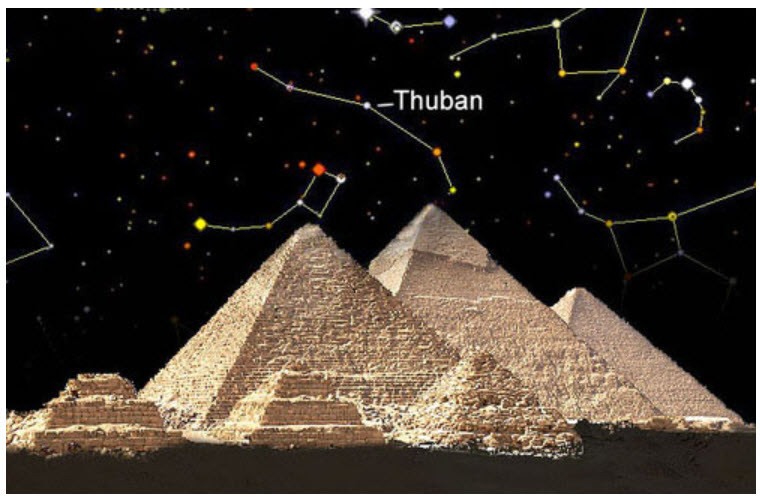
Thuban has 2.8 solar masses, or 280% of the Sun’s mass, and a radius of 3.4 solar radii, or 340% of the Sun’s radius. Based upon its radius, Thuban should be around six times, or more, bigger than our Sun. Thuban’s companion star has 2.6 solar masses or 260% of our Sun’s mass.
Other Characteristics Thuban is a white giant star of spectral class A0III, indicating similarities to Vega in temperature and spectrum, but more luminous and massive. Thuban has been used as an MK spectral standard for the A0III type. It has ceased hydrogen fusion in its core and started to expand. It has an apparent magnitude of 3.6 and an absolute magnitude of -1.20. Thuban is 479 times brighter than our Sun and has average surface temperatures of around 10,100 K, or 1.7 times hotter than our Sun. Thuban’s companion, Alpha Draconis B, is 40 times brighter than our Sun, being 1.83 magnitudes fainter than the primary star. Not much is known about the companion, though it is speculated that it is a main-sequence star slightly cooler than Thuban, and possibly of spectral type A2.
Stellar System
The Thuban / Alpha Draconis star system is a single-lined spectroscopic binary star system, which means that only the spectral liens of the primary component are visible.
The two stars orbit each other once every 51.5 days and have an orbital eccentricity of 0.43. The two components are separated from one another by about 0.46 AU.
This system is an eclipsing binary star system. The eclipses displayed are only partial, with an inclination of slightly less than 90 degrees, with depths of 9% and 2%. These eclipses last for only six hours.
Thuban is one of the stars that take turns as the North Star during the Earth’s precession cycle. Thuban was the Pole Star from 3942 BCE to 1793 BCE, during the creation of some of Egypt’s largest pyramids.
Thuban was closest to the pole in 2830 BCE, coming closest to the north celestial pole out of all the other pole stars. However, Thuban was among the faintest pole stars.
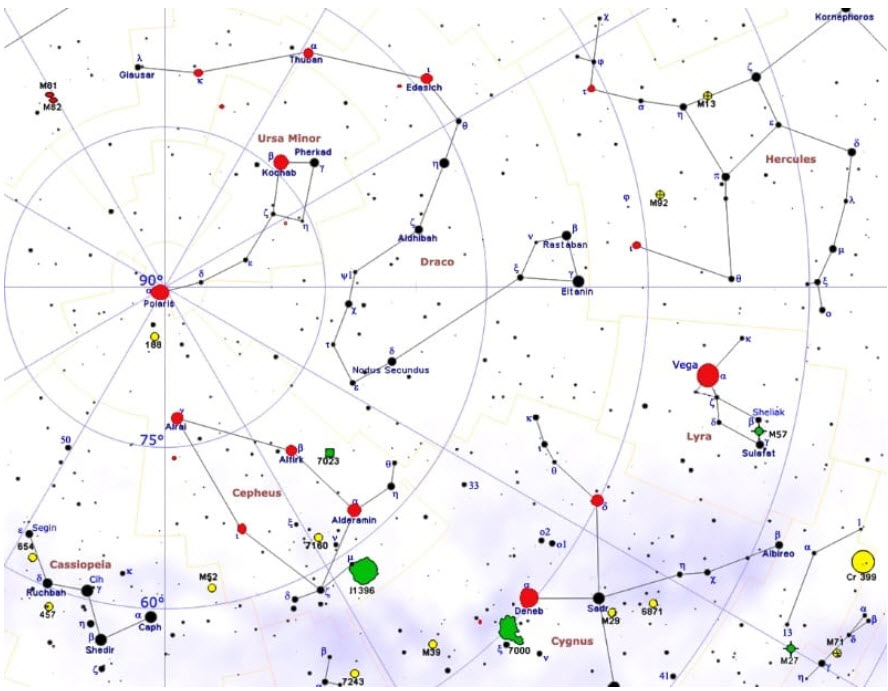
In comparison, the current pole star, Polaris, comes within 0.5 degrees of the north celestial pole and has an apparent magnitude of 1.98. As the North Star, Thuban was preceded by Edasich (Iota Draconis) and succeeded by the brighter Kochab (Beta Ursae Minoris), one of the stars of the Little Dipper, and the fainter Kappa Draconis. Thuban has slowly drifted away from true north over the last 4,800 years.
Location
Thuban is located in the constellation of Draco, the eighth largest constellation in the sky and the fourth largest northern constellation, occupying an area of 1,083 square degrees.
Thuban is easy to spot though, from light-polluted areas, this can become a challenge. Thuban lies about halfway between Mizar, the middle star of the Big Dipper’s handle, and Kochab and Pherkad, the stars that form the outer side of the Little Dipper’s Bowl.
44 Boötis System Summary This star system is one of the key systems in the "Old Empire" from which IS-BEs were brought to Earth and dumped, as unwanted merchandise. This triple star system is located about 41.6 light-years (ly) away from our Sun, Sol. It lies in the northwestern part (15:3:47.3+47:39:14.6, ICRS 2000.0) of Constellation Boötes, the Herdsman or Bear Driver -- north of Nekkar (Beta Boötis), east of Lamda Boötis, northeast of Seginus (Gamma Boötis), southwest of Edasich (Iota Draconis), southeast of Theta Boötis and Alkaid (Eta Ursae Majoris), and west of Tau and Nu Herculis. The "star" was noted to be variable in 1785 by Sir William Herschel (1738-1822), who was born Friedrich Wilhelm Herschel. According to Robert Burnham, Jr. (1931-93), the system was confirmed to be a visual binary in 1832 by Friedrich Georg Wilhelm Struve (1793-1864). In 1926, the fainter component itself was found to be an eclipsing binary by Jan Schilt by photographic observations, which had already been suspected from a spectrum that showed rotationally broadened absorption lines. The system has the variable star designation i Boötis and is often confused with Iota Boötis, a Delta-Scuti-type variable star of spectral and luminosity type A9 V. All three stars of the 44 Boötis system are similar to Sol in size, brightness, and color. The annual proper motion of the system is about 40" in PA 274°, and it's radial velocity is around 24 km per second (15 miles per second) in approach. It is visible to the naked eye. All three are believed to be more than a billion years old (Alan Hale, 1994, pp. 312 and 314). 44 (i) Boötis A This star is a yellowish main sequence dwarf star of spectral and luminosity type F5-G1 Vn (Nikolic et al, 1997; based on Frans van't Veer, 1971; and Kurpinska and van't Veer, 1970; versus Hill et al, 1989, page 89). It may be as massive as (or slightly more so than) Sol, with about the same diameter -- 1.03 to 1.05 percent Solar (Johnson and Wright, 1983, page 683; and Hill et al, 1989) and around 1.14 times its luminosity. Useful star catalogue numbers and designations for 44 Boötis A include: 44 Boo, i Boo, 44i Boo, HR 5618*, Gl 575 A, Hip 73695, HD 133640, BD+48 2259, SAO 45357, Struve 1909 A, and ADS 9494 A. From the perspective of an observer on Earth, the orbit of Star A and the BC tight binary pair exhibit a very elongated and narrow ellipse whose separation has varied from 4.7" in 1880 to less than 0.4" in 1969 (Kaj Aage Gunnar Strand, 1937; A. Gennaro, 1940; L. Bennendijk, 1955; Worley and Heintz, 1983; and Wulff Dieter Heintz, 1963 to 1997; among others). According to new measurements (Staffan Soderhjelm, 1999) found in the new Sixth Catalog of Visual Orbits of Binary Stars, Stars A and B are separated by an "average distance" of about 48.5 AUs (semi-major axis of 3.8" with a HIPPARCOS distance estimate of 41.6 ly), or more than the average of orbital distance of Pluto in the Solar System. They move in a highly elliptical orbit (e= 0.55) that takes about 206 years to complete. Their orbit is inclined about 84° from the perspective of an observer on Earth. These elements are similar to Heintz's 1997 elements of: P=220.0 years; a=3.70"; e= 0.451; and i=83.7 (Wulff Dieter Heintz, 1997). (See an animation of the orbits of Stars A, B, and C and their potentially habitable zones, with a table of basic orbital and physical characteristics.) 44 (i) Boötis B This star is a yellow-orange main sequence dwarf star of spectral and luminosity type G2 V (Nikolic et al, 1997; and Hill et al, 1989). This star may have around the same mass as Sol, 87 to 89 percent of its diameter (Johnson and Wright, 1983, page 683; and Hill et al, 1989), and as little as 54 percent of its luminosity. Useful catalogue numbers for the star include: Gl 575 B, Struve 1909 B, and ADS 9494 B.
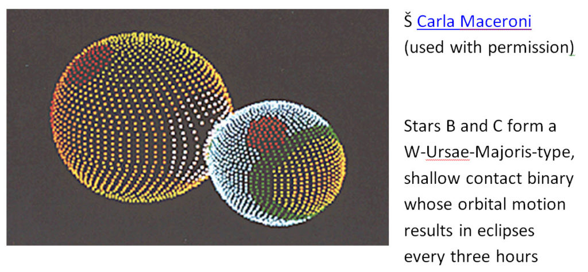
44 Boötis is classified as an eclipsing variable of W Ursae Majoris type (that also resembles U Pegasi) because Star B has a double-lined, spectroscopic companion that is close enough to be considered a (weak thermal) shallow contact binary (Hill et al, 1989, page 96; and Jan Schilt, 1926). Since the outer gas envelopes of the stars are in contact (overflowing their Roche lobes), they essentially share a common photosphere despite having two distinct nuclear-burning cores. Indeed, Stars B and C are separated by only some 0.008 AU, around three quarters of a million miles (more than one million km) or about three times the distance between the Earth and its Moon. They are revolving in a highly circular orbit (e~ 0) that takes only 6.427 hours to complete. Moreover, from the perspective of an observer on Earth, Stars B and C eclipse each other twice at every revolution (every three hours). (See an animation of the orbits of Stars A, B, and C and their potentially habitable zones, with a table of basic orbital and physical characteristics.)
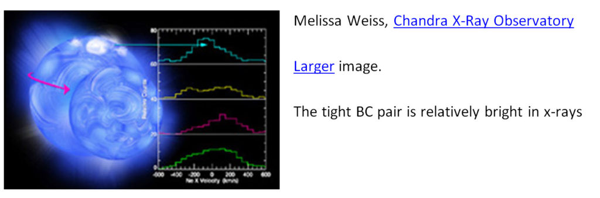
X-ray emission from stellar coronal material has been observed around Stars B and C with the Chandra X-Ray Observatory (press release; Brickhouse et al, 2001; and Nikolic et al, 1997; among others). According to the Yale Bright Star Catalogue's notes entry for HR 5618, a variation in the light curve for this close spectroscopic binary pair appears to be caused by mass transfer, which is supported by observations of gaseous streams between the stars. Eclipsing variables of this type may develop into eruptive "dwarf novae" similar to U Geminorum and SS Cygni, and U Pegasi has been observed to exhibit flares or eruptions of small amplitude that may presage more violent activity at a later stage of evolution. (More discussion on W Ursae Majoris type binaries is available from: Maceroni and van't Veer, 1996.) 44 (i) Boötis C This star is a yellow-orange main sequence dwarf star of possibly spectral and luminosity type G V (Nikolic et al, 1997; and Hill et al, 1989), or later spectral type. This star probably has less mass than Sol, as little as 66 percent of its diameter (Hill et al, 1989), and significantly lower luminosity than Star B. Useful catalogue numbers for the star include Gl 575 C and NS 1503+4739 C. Hunt for Substellar Companions Since at least one of the stars of 44 Boötis is fairly similar to our Sun, some speculate whether the system might contain planets that harbor life. The distance from Star A where an Earth-type planet would be "comfortable" with liquid water is centered around 1.07 AU -- just beyond the orbital distances of Earth in the Solar System, with an orbital period of more than an Earth year. For close-orbiting Stars B and C, the liquid water zone may be centered around 0.73 AU -- between the orbital distances of Venus and Earth, with an orbital period around half a year. Astronomers would find it very difficult to detect an Earth-type planet around either of these stars using present methods.
Sorry for the detailed stellar data, but I couldn't help myself. Let's get back to the extraterrestrial narrative.
The configuration of all the pyramids of the Giza Plateau was intended to create a “mirror image”, on Earth of the solar system and certain constellations within the “Old Empire”.
2,181 BCE — Some manage to escape
MIN, became the God of Fertility of Egypt. The IS-BE, also known as Pan, was also a Greek god. Min or Pan, was an IS-BE who somehow managed to escape from the “Old Empire” amnesia system.
2,160 – 2040 BCE — Old Empire Rulers left
One of the results of the intensifying battle between The Domain Forces and the “Old Empire” forces was that the control of the “divine rulers”, was broken at this time.
They finally left Egypt and returned to the “heavens”, so to speak, in defeat.
Human beings took over the ruling role as Pharaohs. The first human pharaoh moved the Capital city of Egypt from Memphis to Heracleopolis.
I have no problem with this.
1,500 BCE – Destruction of Crete
This is the date for the destruction of Atlantis given by the Egyptian high-priests, Psenophis of Heliopolis, and Sonchis of Sais, to the Greek sage Solon.
This is the date of the destruction of the colony of Atlantis provided by the Egyptians. It differs from that provided by the extraterrestrial, who stated that Atlantis was destroyed. While the extraterrestrial stated that between 400,000 and 75,000 years ago, both Atlantis and Lemuria colonies existed.
The Priests of Anu recorded that the Mediterranean area was invaded by “Atlantean” people about this time. Of course, these people were not from the ancient continent of Atlanta, in the Atlantic Ocean, which existed more than 70,000 years earlier.
These were refugees from the Minoan civilization on Crete escaping from the volcanic eruption and tidal waves of Mt. Thera that destroyed their civilization.
Here, the extraterrestrial clarifies the discrepancy.
Plato’s references to Atlantis were borrowed from the writings of the Greek philosopher Solon, who was given the information by the Egyptian priest who called Atlantis “Kepchu”, which also happens to be the Egyptian name for the people of Crete.
Nicely clarified.
Some of the survivors of the Minoan volcanic disaster asked Egypt for help, since they were the only other civilization with high culture in the Mediterranean area at the time.
1351 BCE – 1337 BCE — Earth Warfare
The Domain Expeditionary Force actively waged a war of religious conquest against the Egyptian mystery cult called the Priest of Amun, also known as the “Old Empire” Brothers of The Serpent.
While the space fleet of the "Old Empire" was destroyed in the solar system much earlier. We can say that the warfare began in 6278 BCE, and ended in 1150 AD. Or roughly 7500 years. The "Old Empire" IS-BE's maintained occupancy in the human bodies on Earth. As the leaders were removed, one by one, their cohorts formed "fifth column activities and "secret societies" that needed to be rooted out and eliminated.
During this time the Pharaoh Akhenaten abolished the priesthood of Amun, and moved the capital of Egypt from Thebes to the new location at Amarna, at the exact geodetic center of Egypt. However, this plot to overthrow the “Old Empire” religious control was quickly spoiled.
1,193 BCE — Greek wars / battle for control of space stations
In the Near East and Achaea, the Greeks and Trojans fought for supremacy, which ended in the destruction of Troy as the finale of the Trojan War.
During this same time, war was being fought out in the space of the solar system between two forces for control of the “space stations” surrounding Earth.
That period of 300 years was a very violent resistance to The Domain Forces by the remnants of the “Old Empire” forces. It did not last long however, as it is futile to resist The Domain.
I have no problem with this.
850 BCE — Homer wrote about IS-BE’s
Homer, the blind Greek poet, wrote the stories ‘the gods’ as borrowed and modified from earlier sources in Vedic texts, Sumerian texts, Babylonian and Egyptian mythology.
His poems, as well as many other “myths” of the ancient world are very accurate descriptions of the exploits of IS-BE’s on Earth who were able to avoid the “Old Empire amnesia operation and operate without biological bodies.
Interesting. Homer wrote stories about IS-BE's that escaped the amnesia operations. They were accurate descriptions. And so it was absolutely possible to undo the Empire amnesia operations.
700 BCE – Vedic Hymns translated into Greek
The Vedic Hymns were first translated in the Greek language. This was the beginning of a cultural revolution in Western civilization that transformed crude and brutal tribal cultures into democratic republics based on more reasonable conduct.
638 – 559 BCE — Atlantis reported to exist
Solon, a wise man from Greece, reported the existence of Atlantis. This was information he received from the “Old Empire” high-priests, Psenophis of Heliopolis and Sonchis of Sais, with whom he studied in Egypt.
630 BCE – Domain replacements for Old Empire religions
Zoroaster created religious practices in Persia around an IS-BE called Ahura Mazda. This was yet another of the growing number of “monotheistic” gods put in place by operatives of The Domain to displace a panoply of “Old Empire” gods.
604 BCE -Laozi
Laozi, a philosopher who wrote a small book called “The Way”, was an IS-BE of great wisdom, who overcame the effects of the “Old Empire” amnesia/hypnosis machinery and escaped from Earth. His understanding of the nature of an IS-BE must have been very good to accomplish this.
According to the common legend, his last lifetime as a human was lived in a small village in China. He contemplated the essence of his own life. Like Gautama Siddhartha, he confronted his own thoughts, and past lives. In so doing, he recovered some of his own memory, ability and immortality.
As an old man, he decided to leave the village and go to the forest to depart the body. The village gatekeeper stopped him and begged him to write down his personal philosophy before leaving.
Here is a small piece of advice he gave about “the way” he rediscovered his own spirit:
"He who looks will not see it; He who listens will not hear it; He who gropes will not grasp it. The formless nonentity, the motionless source of motion. The infinite essence of the spirit is the source of life. Spirit is self. Walls form and support a room, yet the space between them is most important. A pot is formed of clay, yet the space formed therein is most useful. Action is caused by the force of nothing on something, just as the nothing of spirit is the source of all form. One suffers great afflictions because one has a body. Without a body what afflictions could one suffer? When one cares more for the body than for his own spirit, One becomes the body and looses the way of the spirit. The self, the spirit, creates illusion. The delusion of Man is that reality is not an illusion. One who creates illusions and makes them more real than reality, follows the path of the spirit and finds the way of heaven".
593 BCE – Genesis Story
The Genesis story written by the Jewish people describe “angels” or “sons of god” mating with women of Earth, who bore them children. These were probably renegades from the “Old Empire”. They may also have been space pirates or merchants from a system outside the galaxy who came to steal mineral resources, or smuggle drugs.
The Domain has observed that there are many visitors to Earth from neighboring planets and galaxies, but they rarely stop and live here. What kind of beings would live on a prison planet if they were not forced to do so?
The same book also reports the story of a human named Ezekiel who witnessed a spacecraft or aircraft landing near Chebar River in Chaldea. His description of the craft uses very archaic language, technically, but is nevertheless, quite an accurate description of an “Old Empire” saucer or scout craft. It is similar to the sighting of “vimanas” by the people in the foothills of the Himalayas.
Their Genesis story also mentions that “Yahweh” designed biological bodies to live for 120 years on Earth. Biological bodies on most “Sun Type 12, Class 7” planets are usually engineered to last for an average of about 150 years.
Human bodies on Earth last only about one half as long.
We suspect this is because the prison administrators have altered the biological material of human bodies on Earth to die more frequently so that the
IS-BEs who inhabit them will recycle through the amnesia mechanism more frequently.
It should be noted that much of the “Old Testament” was written during the captivity of the Jews who were enslaved in Babylon, which was very heavily controlled by priests of the “Old Empire”. The book introduces a false sense of time and a false concept of the origin of the creation.
The serpent is the symbol of the “Old Empire“. It appears in the beginning of their creation story, or as the Greeks say, “Genesis”, and causes the spiritual destruction of the first human beings, who are metaphorically represented by Adam and Eve.
The Old Testament, clearly influenced by the “Old Empire” Forces, gives a detailed description of the IS-BEs being induced into biological bodies on Earth.
This book also describes many of the “Old Empire” brainwashing activities, including the installation of false memories, lies, superstitions, commands to “forget” and all manner of tricks and traps designed to keep IS-BEs on Earth. Most importantly, it destroys the awareness that humans are Immortal Spiritual Beings.
I have no problem at all with these statements.
580 BCE — Communication centers
The Oracle at Delphi was one temple in a network of many oracle temples. Each temple was a communication center.
The “Old Empire” priests designated a local “god” for each temple.
Each of the temples in this network were located at precisely 5 degrees of latitude intervals from the capital city of Thebes throughout the Mediterranean area as far north as the Baltic Sea.
The shrines served, among other things, as a grid, housing electronic beacons, later called “Omphalus Stones”. The grid arrangement of Oracle sites can only be seen from miles above the Earth.
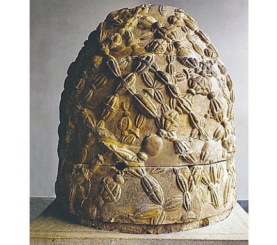
The original network of electronic communications beacons were disabled when the priesthood was dispersed, and were replaced by carved stones.
Very interesting. The original network of electronic communications beacons were disabled when the priesthood was dispersed, and were replaced by carved stones.
The symbol of the “Old Empire” priesthood is a Python, dragon or serpent. It was called the “earth-dragon” at Delphi, which is always represented in sculpture and vase-paintings as a serpent.
In Greek mythology the guardian of the Omphalus Stone at the temple at Delphi was an oracle whose name was Python, the serpent.
She was an IS-BE, who was conquered by a “god” named Apollo.
He buried her under the Omphalos stone.
This is a case of one “god” setting up his temple on the grave of another. This is a very accurate euphemism for The Domain Force that detected and disabled the “Old Empire” temple network on Earth.
It was one of the fatal blows to the “Old Empire” Force in the solar system of Earth.
As I parse this document, I find more and more tidbits of extreme interest. You must keep in mind that all of this was recorded after ten days in captivity and after scanning some books.
559 BCE – Lost Commander of The Domain Battalion was rediscovered
The Commanding Officer of The Domain Battalion who was lost in 5,965 BCE was detected and located by a search party sent to Earth from The Domain Expeditionary Force.
He was incarnated as Cyrus II of Persia during this time.
A unique system of organization was used by Cyrus II and the members of that Battalion who followed him from India through his progression of human lives on Earth.
In part, it enabled them to build the largest empire in the history of the Earth to that date.
The Domain Search Party who located him traveled around the Earth searching for the lost Battalion for several thousand years.
The party consisted of 900 officers of The Domain, divided into teams of 300 each.
One team searched the land, another team search the oceans and the third team searched the space surrounding Earth.
There are many reports made in various human civilizations concerning their activities, which humans did not understand, of course.
The Domain Search Party devised a wide variety of electronic detection devices needed to track the electronic signature or wavelength of each of the missing members of the Battalion.
Some were used in space, others on land, and special devices were invented to detect IS-BEs under water.
One of these electronic detection devices is referred to as a “tree of life”.
The device is literally a tool designed to detect the presence of life, which is an IS-BE. This was a large electronic screen generator designed to permeate wide areas.
To the ancient humans on Earth it resembled a sort of tree, since is consists of an interwoven lattice of electronic field generators and receivers.
The electronic field detects the presence of IS-BEs, whether the IS-BE is occupying a body, or if they are outside a body.
A portable version of this detection device was carried by each of the members of The Domain Search Party.
Stone carvings in Sumeria show winged beings using pinecone-shaped instruments to scan the bodies of human beings. They are also shown carrying the power unit for the scanner which are depicted as stylized baskets or water buckets, being carried by eagle-headed, winged beings.
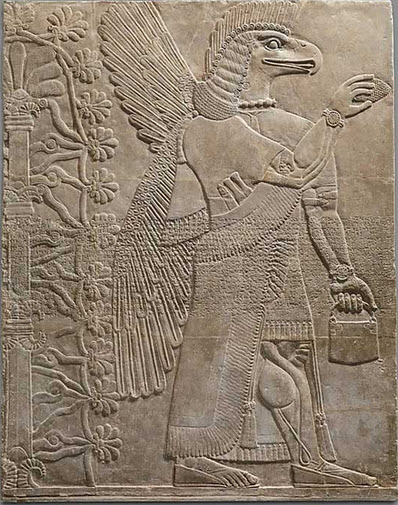
Members of the aerial unit of The Domain Search Party, led by Ahura Mazda, were often called “winged gods” in human interpretations.
Throughout the Persian civilization there are a great many stone relief carving that depict winged space craft, that they called a “faravahar”.
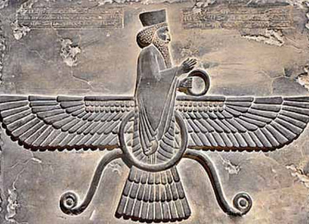
Members of the Aquatic Unit of The Domain Search Party were called “Oannes” by local humans.
Stone carvings of the so-called Oannes are shown wearing silver diving suits. They lived in the sea and appeared to the human population to be men dressed to look like fish. Some members of the lost Battalion were found in the oceans inhabiting the bodies of dolphins or whales.
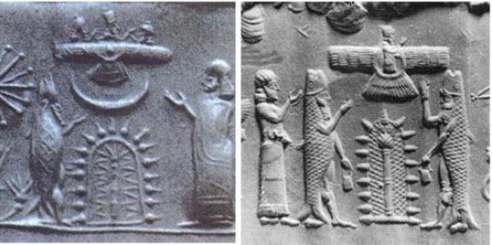
Very interesting stuff.
Therefore, although mythology and history may be based on factual events, they are likewise full of misunderstood and misinterpreted evaluations of the data, and embellished with assumptions, theories and hypotheses which are false.
The space unit of The Domain Expeditionary Force are shown flying in a “Winged-Disc”. This is an allusion to the spiritual power of the IS-BEs, as well as to the space craft used by The Domain Search Party.
I have no problem with this statement.
The Commander of the lost Battalion, as Cyrus II, was an IS-BE who was regarded as a messiah on Earth by both the Jews, and the Muslims. In less than 50 years he established a highly ethical, and humanitarian philosophy which pervaded all of Western Civilization.
Be the Rufus!
His territorial conquests, organization of people and monumental building projects were unprecedented before or since. Such sweeping accomplishments in a short period of time could only have been achieved by a leader and a team of trained officers, pilots, engineers and crew members of a unit of The Domain, acting as a team, who had been trained and worked together for thousands of years.
Although we have discovered the location of many of the IS-BEs in the lost Battalion, The Domain has been unable to restore their memory and return them to active duty as yet.
Of course we cannot transport IS-BEs who are inhabiting biological bodies to the space stations of The Domain since there is no oxygen in our space craft.
Also we do not maintain life support facilities for biological entities there.
Our only hope has been to locate and rekindle the awareness, memory and identity of the IS-BEs of the Lost Battalion. One day they will be capable of rejoining us.
So this differs from what many "more conventionally minded" readers might think. The Domain cannot ever rescue or recover a amnesiac IS-BE member that is in the human form. They have to find other methods to recover their memories, and then extract them from the prison system that exists. Or that did exist in 1947.
200 BCE — Teotihuacan
The last remnant of the “Old Empire” pyramid civilization is at “Teotihuacan“. The Aztec name means “place of the gods” or “where men were transformed into gods”.
Like the astronomical configuration of the Giza pyramids in Egypt, the entire complex is a precise scale-model of the solar system that accurately reflects the orbital distances of the inner planets, the asteroid belt, Jupiter, Saturn, Uranus, Neptune, and Pluto.
Since the planet Uranus had only been “discovered” with modern Earth telescopes in 1787, and Pluto not until 1930, it is apparent that the builders had information from “other sources”.
A common element of the Pyramid Civilizations around the Earth is the constant use of the image of the snake, dragon, or serpent. This is because the beings who planted these civilizations here want to create an illusion that the “gods” are reptilian.
This is also a part of an illusion designed to perpetuate amnesia.
The beings who placed false civilizations on Earth are IS-BEs, just like you. Many of the biological bodies inhabited by IS-BEs in the “Old Empire” are very similar in appearance to the bodies on Earth.
The “gods” are not reptiles, although they often behave like snakes.
I have no problem with these statements.
1,034 – 1,124 AD – Hasan ibn-al-Sabbah
The entire Arab world was enslaved by one man: Hasan ibn-al-Sabbah, the Old Man of the Mountain. He established the Hashshashin who operated a part of Mohammedanism which controlled by terror and fear much of India, Asia Minor and most of the Mediterranean Basin. They became a priesthood that used an extremely effective mind-control mechanism and extortion tool that enabled the “Assassins” to control the civilized world for several hundred years.
Their method was simple. Young men were kidnapped and knocked unconscious with hashish. They were taken to a garden filled with beautiful black-eyed houris in a harem decorated with rivers of milk and honey.
The young men were told that they were in paradise.
They were promised they could return and live there forever if they sacrificed themselves as an assassin of whomever they were commanded to kill. The men were knocked out again, and shoved out into the world to carry out the assassination mission.
Meanwhile, the Old Man of the Mountain sent a messenger to the caliph or, whatever wealthy ruler from whom they demanded payment, demanding camel-loads of gold, spices, incense or other valuables.
If payment did not arrive on time, the assassin would be sent to kill the offending party.
There was virtually no defense against the unknown assailant who wanted nothing more than to carry out his mission, be killed and return to “heaven”.
This is a very crude example of how simple and effective a brainwashing and mind-control operation can be when it is used skillfully, and forcefully. It is a small scale demonstration of how the amnesia mind-control operation is used against the entire IS-BE population of Earth by the “Old Empire”.
Very interesting.
1119 AD — The Knights Templar
The Knights Templar was established as a Christian military unit after the First Crusade.
But (it) quickly transformed into the basis for the international banking system to accumulate money.
(With a purpose of) conducting funding the agenda of operatives for vestiges of the “Old Empire” on Earth.
I have no problem with this.
1135 – 1230 AD – Old Empire Space Fleet completely removed from the solar system
The Domain Expeditionary Force completed the annihilation of the remaining remnants of the “Old Empire” space fleet operating in the solar system around Earth.
Unfortunately, their long established thought control operation remains largely intact.
I have no problem with this. Just keep in mind that it was narrated back in 1947.
1307 AD – Knights Templar disbanded
The Knights Templar was disbanded by King Philip IV of France, who was deeply in debt to the Order. He pressured Pope Clement V to condemn the Order’s members, have them arrested, tortured them into giving false confessions, and burned them at the stake in an effort to erase his debt by seizing all of their wealth.
A majority of the Templars fled to Switzerland where they established an international banking system which secretly controls the economy of Earth.
“Old Empire” operatives act as an unseen influence on international bankers.
The "traditional" West banking system, that controls the US dollar, and all that fiat currency, isn't so much as controlled by "Jews" as it is controlled by elements of the "Old Empire" that need to fund their efforts and activities. It is no wonder that the "Old Empire" operatives are scared shitless with the advent of e-yuan and all those electronic currency options now being implemented.
The banks are operated covertly as a on-combatant provocateur.
(It is designed) to covertly promote and finance weapons and warfare between the nations of Earth.
Warfare is an internal mechanism of control over the inmate population.
This was written in 1947, and most people today in 2021 realize this with the crazy shit coming out of America today.
The purpose of the senseless genocide and carnage of wars financed by these international banks is to prevent the IS-BEs of Earth from sharing open communication, cooperate together in activities that might enable IS-BEs to prosper, become enlightened, and escape their imprisonment.”
I have no problem with these statements.
End of part 4
Sure, there are miss-translations on time, confusions in regard to galaxies and universes, and a mish-mash of confusion between consciousness+, humans, and some confusion regarding galactic “ownership” and “power projection” between different species, however this is the real deal. It fits in perfectly with everything that I know about MAJestic.
The more I parse it in detail, the clearer to me that this is exactly what it is claimed to be.
I will admit that I was unaware of the “Old Empire”, and the role that the Earth had as a “prison planet” for it. I am also unaware of the details regarding it.
But as I compare what I know, and what I have experienced with what I have parsed, I have been able to “open doors” so to speak, and suddenly mysteries that I have been part of have now been explained. I can tell you that this document has really been a real benefit to me personally.
Please do NOT read the document without reading my parsing. I think my parsing will help you all move foreword with this.
Key Points
Never the less, I believe the following to be true in regards to this parsing of this section of the book…
- Everything here is true.
- Earth is no longer a “prison planet”
- Earth is now a “sentience nursery”.
- Fear not an “abduction”. It’s actually a good thing. Not a bad thing.
- Type-1 greys of “the Domain” are service-for-others sentience.
- MAJestic is changing everything, hand in hand with the Type-1 greys.
In regards to much of this “historical data” it is very interesting, and rings true to those of us who have read the alternative-histories that abound in the books and the internet. Yet, we must always keep in mind that this document was recorded from an extraterrestrial that had only ten or so days in interrogation, and this is it’s statement made in 1947.
Part five
You can visit part five HERE.